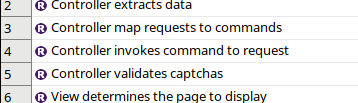
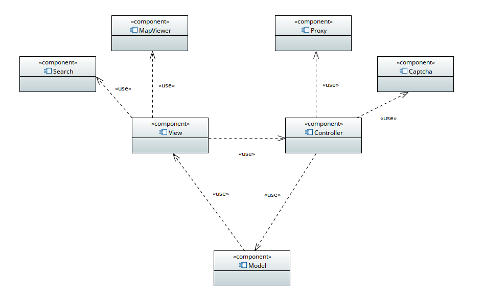
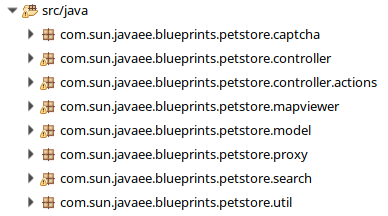
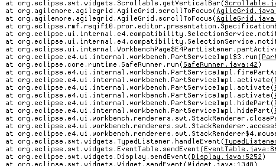

Petstore Traceability Demo

Requirements
- Controller extracts data
- Controller filter requests
- Controller invokes command to request
- Controller map requests to commands
- Controller validates captchas
- Model retrieves data from database
- View determines the page to display
- View formats the page to display

Components
- Captcha
- Controller
- MapViewer
- Model
- Proxy
- Search
- View

Java Classes
- Address
- AddressBean
- AutocompleteBean
- BlueFilter
- CaptchaAction
- CaptchaSingleton
- CaptchaValidateFilter
- CatalogFacade
- CatalogXmlAction
- Category
- ControllerServlet
- DefaultControllerAction
- EntryFilter
- FileUploadBean
- FileUploadResponse
- GeoCoder
- GeoPoint
- HTMLParser
- ImageAction
- ImageScaler
- IndexDocument
- Indexer
- Item
- MapBean
- PayPalBean
- PetstoreConstants
- PetstoreUtil
- Product
- RandomString
- RatingBean
- SQLParser
- SearchBean
- SearchIndex
- SellerContactInfo
- SimpleCaptcha
- Tag
- TagXmlAction
- UpdateIndex
- ZipLocation

Traces
- A 'proxyHost' and 'proxyPort' isn't set as a web.xml context-param. A proxy server may be necessary to reach the open internet.
- 1CaptchaValidateFilter:doFilter()
- Matched 6 locations, taking the first one
- No addresses for location - 128.12 42.01
- Setting proxy to 212.0.18.42:8000. Make sure server.policy is updated to allow setting System Properties
- ZOOM - Lat and long - 2 - 47.21 - 5.27
- 1geocoder.lookup.exception
- image_does_not_exist lib/petstore/banana.jpg
- search.results 0
- search.string Brazilian cat